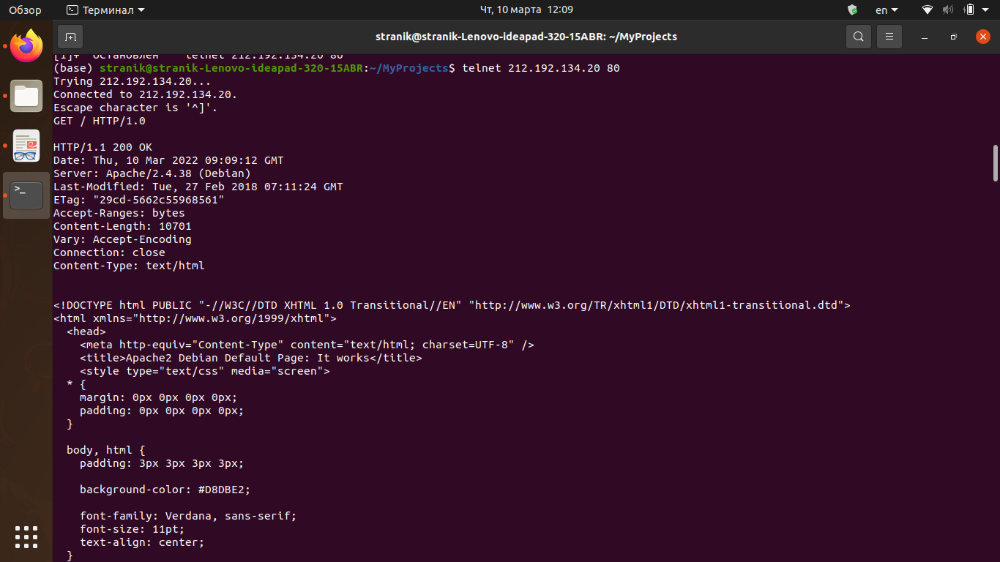
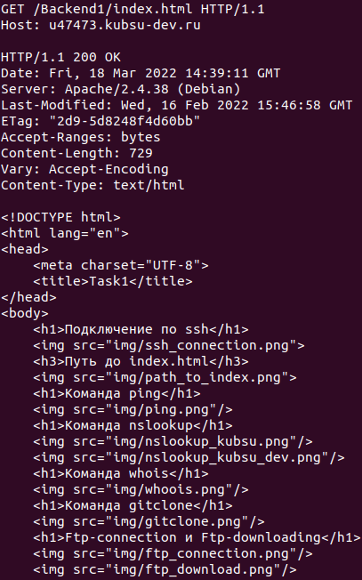
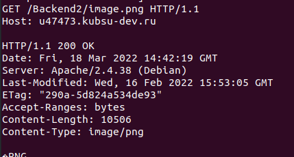
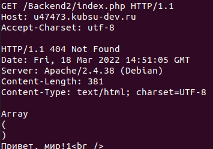
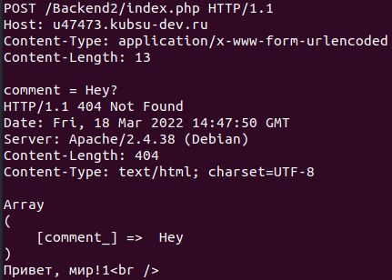
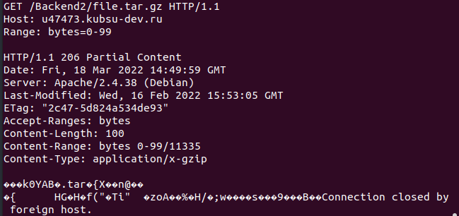

Получить главную страницу сетодом GET 1.0

Получить главную страницу сетодом GET 1.1

Определить размер файла file.tar.gz, не скачивая его

Oпределить медиатип ресурса /image.png

Oтправить комментарий на сервер по адресу /index.php

Получить первые 100 байт файла /file.tar.gz

Oпределить кодировку ресурса /index.php.